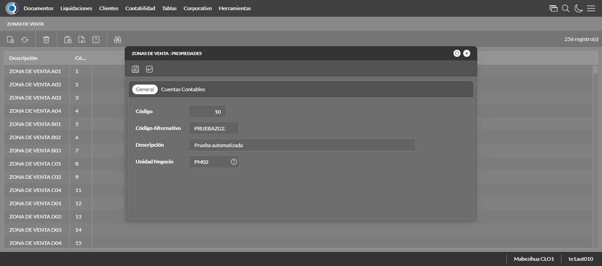

Desarrollado por : Area de Testing PWST
Fecha y hora de inicio : 2022-11-07 11:55:37
Duracion : 0:26:00.469540
Resultado : Total 23，Correctos 23 ，Taza de resultado 100.00%
Resumen 100.00% Errores 0 Fallidos 0 Correctos 23 Test realizados 23
| Caso de Prueba | Total | Correctos | Fallido | Error | Detalles | Captura del error |
| ScriptMorado.Test: Script Amarillo | 23 | 23 | 0 | 0 | Detalles | |
test |
pt1_1: 2022-11-07 11:55:38,459 - root - INFO - Se abre el chrome
2022-11-07 11:55:39,699 - root - INFO - Entra a la URL
2022-11-07 11:55:39,824 - root - INFO - Maximiza la pantalla
2022-11-07 11:55:42,864 - root - INFO - Cambia al frame
|
|
||||
test_000: Ingresa a la base de datos |
pt1_2: 2022-11-07 11:55:45,956 - root - INFO - Escribe el usuario
2022-11-07 11:55:46,030 - root - INFO - Escribe la contraseña
2022-11-07 11:55:46,140 - root - INFO - Se dio clic en el boton ingresar
2022-11-07 11:55:46,890 - root - INFO - Ejecutar Enterprise
2022-11-07 11:55:50,948 - root - INFO - Cambia entre pestañas
|
|
||||
test_001: Ingresa a pantalla Ubicaciones Geográficas |
pt1_3: 2022-11-07 11:56:21,342 - root - INFO - Abre la pantalla de Paises
2022-11-07 11:56:21,389 - root - INFO - La pantalla ejecutada es Paises.
2022-11-07 11:56:21,389 - root - INFO - Captura: C:\xampp\htdocs\versiones\automatizaciones\AutoPWST\ScriptMorado\report\img screen：20221107_11_56_21.png
2022-11-07 11:56:21,559 - root - INFO - Se presiona el boton 'Nuevo', para crear un nuevo registro.
|
|||||
test_002: Agregar Ubicaciones Geográficas |
pt1_4: 2022-11-07 11:56:24,622 - root - INFO - Se abrio la pantalla para el ingreso de un registro nuevo.
2022-11-07 11:56:24,679 - root - INFO - Ingresa el codigo del nuevo registro
2022-11-07 11:56:27,774 - root - INFO - Ingresa el codigo alternativo del nuevo registro
2022-11-07 11:56:30,881 - root - INFO - Ingresa la descripción del nuevo registro
2022-11-07 11:56:33,968 - root - INFO - Ingresa el número de viviendas del nuevo registro
2022-11-07 11:56:37,072 - root - INFO - Ingresa el número de hogares particulares del nuevo registro
2022-11-07 11:56:40,162 - root - INFO - Ingresa el número de Población de hombres del nuevo registro
2022-11-07 11:56:43,239 - root - INFO - Ingresa el número de Población de mujeres del nuevo registro
2022-11-07 11:56:46,332 - root - INFO - Ingresa el número de Población Total del nuevo registro
2022-11-07 11:56:49,439 - root - INFO - Ingresa el Codigo ISO del nuevo registro
2022-11-07 11:56:52,446 - root - INFO - Captura: C:\xampp\htdocs\versiones\automatizaciones\AutoPWST\ScriptMorado\report\img screen：20221107_11_56_52.png
2022-11-07 11:57:02,693 - root - INFO - Se hace el cambio de pestaña para continuar con el registro nuevo
2022-11-07 11:57:02,768 - root - INFO - Se presiona el boton 'Nuevo', para crear un nuevo registro.
2022-11-07 11:57:05,847 - root - INFO - Ingresa el codigo del nuevo registro
2022-11-07 11:57:08,965 - root - INFO - Ingresa el codigo alternativo del nuevo registro
2022-11-07 11:57:12,080 - root - INFO - Ingresa la descripción del nuevo registro
2022-11-07 11:57:25,643 - root - INFO - Ingresa el número de viviendas del nuevo registro
2022-11-07 11:57:28,715 - root - INFO - Ingresa el número de hogares particulares del nuevo registro
2022-11-07 11:57:31,802 - root - INFO - Ingresa el número de Población de hombres del nuevo registro
2022-11-07 11:57:34,902 - root - INFO - Ingresa el número de Población de mujeres del nuevo registro
2022-11-07 11:57:37,981 - root - INFO - Ingresa el número de Población Total del nuevo registro
2022-11-07 11:57:41,078 - root - INFO - Se hace el cambio de pestaña para continuar con el registro nuevo
2022-11-07 11:57:44,174 - root - INFO - Se presiona el boton 'Nuevo', para crear un nuevo registro.
2022-11-07 11:57:47,258 - root - INFO - Ingresa el codigo del nuevo registro
2022-11-07 11:57:50,366 - root - INFO - Ingresa el codigo alternativo del nuevo registro
2022-11-07 11:57:53,489 - root - INFO - Ingresa la descripción del nuevo registro
2022-11-07 11:57:56,584 - root - INFO - Ingresa el número de viviendas del nuevo registro
2022-11-07 11:57:59,693 - root - INFO - Ingresa el número de hogares particulares del nuevo registro
2022-11-07 11:58:02,787 - root - INFO - Ingresa el número de Población de hombres del nuevo registro
2022-11-07 11:58:05,888 - root - INFO - Ingresa el número de Población de mujeres del nuevo registro
2022-11-07 11:58:08,993 - root - INFO - Ingresa el número de Población Total del nuevo registro
2022-11-07 11:58:12,100 - root - INFO - Se hace el cambio de pestaña para continuar con el registro nuevo
2022-11-07 11:58:15,206 - root - INFO - Se presiona el boton 'Nuevo', para crear un nuevo registro.
2022-11-07 11:58:18,293 - root - INFO - Ingresa el codigo del nuevo registro
2022-11-07 11:58:21,404 - root - INFO - Ingresa el codigo alternativo del nuevo registro
2022-11-07 11:58:24,518 - root - INFO - Ingresa la descripción del nuevo registro
2022-11-07 11:58:27,623 - root - INFO - Ingresa el número de viviendas del nuevo registro
2022-11-07 11:58:30,733 - root - INFO - Ingresa el número de hogares particulares del nuevo registro
2022-11-07 11:58:33,840 - root - INFO - Ingresa el número de Población de hombres del nuevo registro
2022-11-07 11:58:36,941 - root - INFO - Ingresa el número de Población de mujeres del nuevo registro
2022-11-07 11:58:40,038 - root - INFO - Ingresa el número de Población Total del nuevo registro
2022-11-07 11:58:43,129 - root - INFO - Se da clic en el boton Guardar; se debe crear un nuevo registro.
2022-11-07 11:58:48,224 - root - INFO - Se da clic en el boton Guardar; se debe crear un nuevo registro.
2022-11-07 11:58:53,324 - root - INFO - Se hace el cambio de pestaña para continuar con el registro nuevo
2022-11-07 11:58:56,434 - root - INFO - Se presiona el boton 'Nuevo', para crear un nuevo registro.
2022-11-07 11:59:24,379 - root - INFO - Se da clic en el boton Guardar; se debe crear un nuevo registro.
2022-11-07 11:59:29,466 - root - INFO - Se da clic en el boton Guardar; se debe crear un nuevo registro.
2022-11-07 11:59:34,553 - root - INFO - Se da clic en el boton Guardar; se debe crear un nuevo registro.
|
|||||
test_003: Modifica Ubicaciones Geográficas |
pt1_5: 2022-11-07 11:59:39,642 - root - INFO - Se presiona el boton 'Refrescar', para crear un nuevo registro igual al anterior.
2022-11-07 11:59:55,812 - root - INFO - Se presiona el boton 'Codigo', para buscar un nuevo registro y poder modificarlo.
2022-11-07 12:00:00,408 - root - INFO - Se da clic en el registro creado, para proceder a modificarlo.
2022-11-07 12:00:00,533 - root - INFO - Ingresa el codigo alternativo del nuevo registro
2022-11-07 12:00:03,673 - root - INFO - Ingresa la descripción del nuevo registro
2022-11-07 12:00:06,774 - root - INFO - Ingresa el número de viviendas del nuevo registro
2022-11-07 12:00:09,883 - root - INFO - Ingresa el número de hogares particulares del nuevo registro
2022-11-07 12:00:13,013 - root - INFO - Ingresa el número de Población de hombres del nuevo registro
2022-11-07 12:00:16,142 - root - INFO - Ingresa el número de Población de mujeres del nuevo registro
2022-11-07 12:00:19,263 - root - INFO - Ingresa el número de Población Total del nuevo registro
2022-11-07 12:00:22,397 - root - INFO - Ingresa el Codigo ISO del nuevo registro
2022-11-07 12:00:25,407 - root - INFO - Captura: C:\xampp\htdocs\versiones\automatizaciones\AutoPWST\ScriptMorado\report\img screen：20221107_12_00_25.png
2022-11-07 12:00:35,646 - root - INFO - Se hace el cambio de pestaña para continuar con el registro nuevo
2022-11-07 12:00:40,236 - root - INFO - Se da clic en el registro creado, para proceder a modificarlo.
2022-11-07 12:00:40,364 - root - INFO - Ingresa el codigo alternativo del nuevo registro
2022-11-07 12:00:43,501 - root - INFO - Ingresa la descripción del nuevo registro
2022-11-07 12:00:59,053 - root - INFO - Ingresa el número de viviendas del nuevo registro
2022-11-07 12:01:02,163 - root - INFO - Ingresa el número de hogares particulares del nuevo registro
2022-11-07 12:01:05,285 - root - INFO - Ingresa el número de Población de hombres del nuevo registro
2022-11-07 12:01:08,416 - root - INFO - Ingresa el número de Población de mujeres del nuevo registro
2022-11-07 12:01:11,539 - root - INFO - Ingresa el número de Población Total del nuevo registro
2022-11-07 12:01:14,631 - root - INFO - Se hace el cambio de pestaña para continuar con el registro nuevo
2022-11-07 12:01:22,231 - root - INFO - Se da clic en el registro creado, para proceder a modificarlo.
2022-11-07 12:01:25,377 - root - INFO - Ingresa el codigo alternativo del nuevo registro
2022-11-07 12:01:28,500 - root - INFO - Ingresa la descripción del nuevo registro
2022-11-07 12:01:31,622 - root - INFO - Ingresa el número de viviendas del nuevo registro
2022-11-07 12:01:34,754 - root - INFO - Ingresa el número de hogares particulares del nuevo registro
2022-11-07 12:01:37,882 - root - INFO - Ingresa el número de Población de hombres del nuevo registro
2022-11-07 12:01:41,015 - root - INFO - Ingresa el número de Población de mujeres del nuevo registro
2022-11-07 12:01:44,139 - root - INFO - Ingresa el número de Población Total del nuevo registro
2022-11-07 12:01:47,228 - root - INFO - Se hace el cambio de pestaña para continuar con el registro nuevo
2022-11-07 12:01:54,829 - root - INFO - Se da clic en el registro creado, para proceder a modificarlo.
2022-11-07 12:01:57,968 - root - INFO - Ingresa el codigo alternativo del nuevo registro
2022-11-07 12:02:01,102 - root - INFO - Ingresa la descripción del nuevo registro
2022-11-07 12:02:04,228 - root - INFO - Ingresa el número de viviendas del nuevo registro
2022-11-07 12:02:07,353 - root - INFO - Ingresa el número de hogares particulares del nuevo registro
2022-11-07 12:02:10,484 - root - INFO - Ingresa el número de Población de hombres del nuevo registro
2022-11-07 12:02:13,617 - root - INFO - Ingresa el número de Población de mujeres del nuevo registro
2022-11-07 12:02:16,744 - root - INFO - Ingresa el número de Población Total del nuevo registro
2022-11-07 12:02:19,839 - root - INFO - Se da clic en el boton Guardar; se debe crear un nuevo registro.
2022-11-07 12:02:22,945 - root - INFO - Se da clic en el boton Guardar; se debe crear un nuevo registro.
2022-11-07 12:02:28,036 - root - INFO - Se hace el cambio de pestaña para continuar con el registro nuevo
2022-11-07 12:02:35,643 - root - INFO - Se da clic en el registro creado, para proceder a modificarlo.
2022-11-07 12:03:10,533 - root - INFO - Se da clic en el boton Guardar; se debe crear un nuevo registro.
2022-11-07 12:03:13,607 - root - INFO - Se da clic en el boton Guardar; se debe crear un nuevo registro.
2022-11-07 12:03:16,704 - root - INFO - Se da clic en el boton Guardar; se debe modificar la informacion del registro.
|
|||||
test_004: Elimina Ubicaciones Geográficas |
pt1_6: 2022-11-07 12:03:19,780 - root - INFO - Se presiona el boton 'Refrescar', para proceder a eliminar el registro.
2022-11-07 12:03:37,378 - root - INFO - Se da clic en el registro creado, para proceder a eliminarlo.
2022-11-07 12:03:43,476 - root - INFO - Se hace el cambio de pestaña para continuar con el registro nuevo
2022-11-07 12:03:48,045 - root - INFO - Se da clic en el registro creado, para proceder a modificarlo.
2022-11-07 12:03:51,119 - root - INFO - Se hace el cambio de pestaña para continuar con el registro nuevo
2022-11-07 12:03:58,685 - root - INFO - Se da clic en el registro creado, para proceder a modificarlo.
2022-11-07 12:04:01,780 - root - INFO - Se hace el cambio de pestaña para continuar con el registro nuevo
2022-11-07 12:04:09,378 - root - INFO - Se da clic en el registro creado, para proceder a modificarlo.
2022-11-07 12:04:12,466 - root - INFO - Se presiona el boton 'Eliminar', para eliminar el registro.
2022-11-07 12:04:15,563 - root - INFO - Se da clic en el boton Guardar; se debe crear un nuevo registro.
2022-11-07 12:04:20,646 - root - INFO - Se da clic en el boton Guardar; se debe crear un nuevo registro.
2022-11-07 12:04:23,735 - root - INFO - Se da clic en el boton Guardar; se debe modificar la informacion del registro.
2022-11-07 12:04:31,338 - root - INFO - Se da clic en el registro creado, para proceder a eliminarlo.
2022-11-07 12:04:37,424 - root - INFO - Se hace el cambio de pestaña para continuar con el registro nuevo
2022-11-07 12:04:42,028 - root - INFO - Se da clic en el registro creado, para proceder a modificarlo.
2022-11-07 12:04:45,125 - root - INFO - Se hace el cambio de pestaña para continuar con el registro nuevo
2022-11-07 12:04:52,729 - root - INFO - Se da clic en el registro creado, para proceder a modificarlo.
2022-11-07 12:04:55,832 - root - INFO - Se presiona el boton 'Eliminar', para eliminar el registro.
2022-11-07 12:05:00,905 - root - INFO - Se hace el cambio de pestaña para continuar con el registro nuevo
2022-11-07 12:05:08,495 - root - INFO - Se da clic en el registro creado, para proceder a modificarlo.
2022-11-07 12:05:11,593 - root - INFO - Se presiona el boton 'Eliminar', para eliminar el registro.
2022-11-07 12:05:16,699 - root - INFO - Se da clic en el boton Guardar; se debe crear un nuevo registro.
2022-11-07 12:05:19,786 - root - INFO - Se da clic en el boton Guardar; se debe modificar la informacion del registro.
2022-11-07 12:05:27,393 - root - INFO - Se da clic en el registro creado, para proceder a eliminarlo.
2022-11-07 12:05:33,490 - root - INFO - Se hace el cambio de pestaña para continuar con el registro nuevo
2022-11-07 12:05:38,078 - root - INFO - Se da clic en el registro creado, para proceder a modificarlo.
2022-11-07 12:05:41,167 - root - INFO - Se presiona el boton 'Eliminar', para eliminar el registro.
2022-11-07 12:05:46,252 - root - INFO - Se da clic en el boton Guardar; se debe modificar la informacion del registro.
2022-11-07 12:05:53,840 - root - INFO - Se da clic en el registro creado, para proceder a eliminarlo.
2022-11-07 12:05:56,934 - root - INFO - Se presiona el boton 'Eliminar', para eliminar el registro.
2022-11-07 12:06:01,945 - root - INFO - Captura: C:\xampp\htdocs\versiones\automatizaciones\AutoPWST\ScriptMorado\report\img screen：20221107_12_06_01.png
2022-11-07 12:06:02,101 - root - INFO - Se confirma el eliminado del registro
2022-11-07 12:06:07,203 - root - INFO - Se presiona el boton 'Refrescar', para crear un nuevo registro igual al anterior.
2022-11-07 12:06:12,293 - root - INFO - Se presiona el boton 'Cerrar', para cerrar la pantalla de Categorias Fiscales.
|
|||||
test_005: Ingresa a pantalla Zona Geográfica |
pt1_7: 2022-11-07 12:06:24,183 - root - INFO - Abre la pantalla de Zonas Geográficas
2022-11-07 12:06:24,214 - root - INFO - Captura: C:\xampp\htdocs\versiones\automatizaciones\AutoPWST\ScriptMorado\report\img screen：20221107_12_06_24.png
2022-11-07 12:06:24,304 - root - INFO - La pantalla ejecutada es Zonas Geográficas.
2022-11-07 12:06:24,360 - root - INFO - Se presiona el boton 'Nuevo', para crear un nuevo registro.
|

|
||||
test_006: Agregar Zona Geográfica |
pt1_8: 2022-11-07 12:06:27,400 - root - INFO - Se abrio la pantalla para el ingreso de un registro nuevo.
2022-11-07 12:06:27,459 - root - INFO - Ingresa el codigo del nuevo registro
2022-11-07 12:06:30,564 - root - INFO - Ingresa el codigo alternativo del nuevo registro
2022-11-07 12:06:33,669 - root - INFO - Ingresa la descripción del nuevo registro
2022-11-07 12:06:46,320 - root - INFO - Captura: C:\xampp\htdocs\versiones\automatizaciones\AutoPWST\ScriptMorado\report\img screen：20221107_12_06_46.png
2022-11-07 12:06:46,475 - root - INFO - Se hace el cambio de pestaña para continuar con el registro nuevo
2022-11-07 12:06:54,566 - root - INFO - Se presiona el boton 'Nuevo', para crear un nuevo registro.
2022-11-07 12:07:21,850 - root - INFO - Se presiona el boton 'Aceptar', para guardar el registro.
2022-11-07 12:07:21,924 - root - INFO - Se da clic en el boton Guardar; se debe crear un nuevo registro.
|
|||||
test_007: Modifica Zona Geográfica |
pt1_9: 2022-11-07 12:07:25,016 - root - INFO - Se presiona el boton 'Refrescar', para crear un nuevo registro igual al anterior.
2022-11-07 12:07:32,598 - root - INFO - Se da clic en el registro creado, para proceder a modificarlo.
2022-11-07 12:07:32,722 - root - INFO - Se modifica el contenido del campo Descripcion
2022-11-07 12:07:35,844 - root - INFO - Se modifica el contenido del campo Descripcion
2022-11-07 12:07:48,517 - root - INFO - Captura: C:\xampp\htdocs\versiones\automatizaciones\AutoPWST\ScriptMorado\report\img screen：20221107_12_07_48.png
2022-11-07 12:07:48,675 - root - INFO - Se hace el cambio de pestaña para continuar con el registro nuevo
2022-11-07 12:07:56,276 - root - INFO - Se da clic en el registro creado, para proceder a modificarlo.
2022-11-07 12:08:23,532 - root - INFO - Se presiona el boton 'Aceptar', para guardar el registro.
2022-11-07 12:08:23,601 - root - INFO - Se da clic en el boton Guardar; se debe modificar la informacion del registro.
|

|
||||
test_008: Elimina Zona Geográfica |
pt1_10: 2022-11-07 12:08:26,664 - root - INFO - Se presiona el boton 'Refrescar', para proceder a eliminar el registro.
2022-11-07 12:08:34,247 - root - INFO - Se da clic en el registro creado, para proceder a eliminarlo.
2022-11-07 12:08:34,317 - root - INFO - Se presiona el boton 'Eliminar', para eliminar el registro.
2022-11-07 12:08:37,327 - root - INFO - Captura: C:\xampp\htdocs\versiones\automatizaciones\AutoPWST\ScriptMorado\report\img screen：20221107_12_08_37.png
2022-11-07 12:08:37,487 - root - INFO - Se confirma el eliminado del registro
2022-11-07 12:08:39,560 - root - INFO - Se presiona el boton 'Refrescar', para crear un nuevo registro igual al anterior.
2022-11-07 12:08:41,632 - root - INFO - Se presiona el boton 'Cerrar', para cerrar la pantalla de Categorias Fiscales.
|
|||||
test_009: Ingresa a pantalla Zona Reparto |
pt1_11: 2022-11-07 12:08:55,795 - root - INFO - Abre la pantalla de unidades
2022-11-07 12:08:55,842 - root - INFO - Captura: C:\xampp\htdocs\versiones\automatizaciones\AutoPWST\ScriptMorado\report\img screen：20221107_12_08_55.png
2022-11-07 12:08:55,922 - root - INFO - La pantalla ejecutada es Zonas Bancarias.
2022-11-07 12:08:55,993 - root - INFO - Se presiona el boton 'Nuevo', para crear un nuevo registro.
|
|||||
test_010: Agregar Zona Reparto |
pt1_12: 2022-11-07 12:08:59,028 - root - INFO - Se abrio la pantalla para el ingreso de un registro nuevo.
2022-11-07 12:08:59,091 - root - INFO - Ingresa el codigo del nuevo registro
2022-11-07 12:09:02,198 - root - INFO - Ingresa el codigo alternativo del nuevo registro
2022-11-07 12:09:05,277 - root - INFO - Ingresa la descripción del nuevo registro
2022-11-07 12:09:08,370 - root - INFO - Ingresa el repartidor del nuevo registro
2022-11-07 12:09:21,047 - root - INFO - Captura: C:\xampp\htdocs\versiones\automatizaciones\AutoPWST\ScriptMorado\report\img screen：20221107_12_09_21.png
2022-11-07 12:09:21,212 - root - INFO - Se da clic en el boton Guardar; se debe crear un nuevo registro.
|

|
||||
test_011: Modifica Zona Reparto |
pt1_13: 2022-11-07 12:09:24,296 - root - INFO - Se presiona el boton 'Refrescar', para crear un nuevo registro igual al anterior.
2022-11-07 12:09:46,897 - root - INFO - Se da clic en el registro creado, para proceder a modificarlo.
2022-11-07 12:09:47,018 - root - INFO - Se modifica el contenido del campo Descripcion
2022-11-07 12:09:50,123 - root - INFO - Se modifica el contenido del campo Descripcion
2022-11-07 12:09:53,201 - root - INFO - Captura: C:\xampp\htdocs\versiones\automatizaciones\AutoPWST\ScriptMorado\report\img screen：20221107_12_09_53.png
2022-11-07 12:09:53,342 - root - INFO - Se modifica el contenido del campo repartidor
2022-11-07 12:09:56,417 - root - INFO - Se da clic en el boton Guardar; se debe modificar la informacion del registro.
|
|||||
test_012: Elimina Zona Reparto |
pt1_14: 2022-11-07 12:09:59,494 - root - INFO - Se presiona el boton 'Refrescar', para proceder a eliminar el registro.
2022-11-07 12:10:22,083 - root - INFO - Se da clic en el registro creado, para proceder a eliminarlo.
2022-11-07 12:10:22,167 - root - INFO - Se presiona el boton 'Eliminar', para eliminar el registro.
2022-11-07 12:10:25,175 - root - INFO - Captura: C:\xampp\htdocs\versiones\automatizaciones\AutoPWST\ScriptMorado\report\img screen：20221107_12_10_25.png
2022-11-07 12:10:25,349 - root - INFO - Se confirma el eliminado del registro
2022-11-07 12:10:27,415 - root - INFO - Se presiona el boton 'Refrescar', para crear un nuevo registro igual al anterior.
2022-11-07 12:10:29,492 - root - INFO - Se presiona el boton 'Cerrar', para cerrar la pantalla de Categorias Fiscales.
|

|
||||
test_013: Ingresa a pantalla Zona Venta |
pt1_15: 2022-11-07 12:10:41,378 - root - INFO - Abre la pantalla de Zonas de Venta
2022-11-07 12:10:41,410 - root - INFO - La pantalla ejecutada es Zonas de Ventas.
2022-11-07 12:10:41,410 - root - INFO - Captura: C:\xampp\htdocs\versiones\automatizaciones\AutoPWST\ScriptMorado\report\img screen：20221107_12_10_41.png
2022-11-07 12:10:41,571 - root - INFO - Se presiona el boton 'Nuevo', para crear un nuevo registro.
|

|
||||
test_014: Agregar Zona Venta |
pt1_16: 2022-11-07 12:10:44,611 - root - INFO - Se abrio la pantalla para el ingreso de un registro nuevo.
2022-11-07 12:10:44,677 - root - INFO - Ingresa el codigo del nuevo registro
2022-11-07 12:10:47,770 - root - INFO - Ingresa el codigo alternativo del nuevo registro
2022-11-07 12:10:50,868 - root - INFO - Ingresa la descripción del nuevo registro
2022-11-07 12:11:03,526 - root - INFO - Captura: C:\xampp\htdocs\versiones\automatizaciones\AutoPWST\ScriptMorado\report\img screen：20221107_12_11_03.png
2022-11-07 12:11:03,691 - root - INFO - Se hace el cambio de pestaña para continuar con el registro nuevo
2022-11-07 12:11:11,789 - root - INFO - Se presiona el boton 'Nuevo', para crear un nuevo registro.
2022-11-07 12:11:39,074 - root - INFO - Se presiona el boton 'Aceptar', para guardar el registro.
2022-11-07 12:11:39,151 - root - INFO - Se da clic en el boton Guardar; se debe crear un nuevo registro.
|
 | ||||
test_015: Modifica Zona Venta |
pt1_17: 2022-11-07 12:11:42,238 - root - INFO - Se presiona el boton 'Refrescar', para crear un nuevo registro igual al anterior.
2022-11-07 12:11:49,838 - root - INFO - Se da clic en el registro creado, para proceder a modificarlo.
2022-11-07 12:11:49,963 - root - INFO - Se modifica el contenido del campo Descripcion
2022-11-07 12:11:53,070 - root - INFO - Se modifica el contenido del campo Descripcion
2022-11-07 12:12:05,740 - root - INFO - Captura: C:\xampp\htdocs\versiones\automatizaciones\AutoPWST\ScriptMorado\report\img screen：20221107_12_12_05.png
2022-11-07 12:12:05,887 - root - INFO - Se hace el cambio de pestaña para continuar con el registro nuevo
2022-11-07 12:12:13,495 - root - INFO - Se da clic en el registro creado, para proceder a modificarlo.
2022-11-07 12:12:40,749 - root - INFO - Se presiona el boton 'Aceptar', para guardar el registro.
2022-11-07 12:12:40,826 - root - INFO - Se da clic en el boton Guardar; se debe modificar la informacion del registro.
|

|
||||
test_016: Elimina Zona Venta |
pt1_18: 2022-11-07 12:12:43,920 - root - INFO - Se presiona el boton 'Refrescar', para proceder a eliminar el registro.
2022-11-07 12:12:51,510 - root - INFO - Se da clic en el registro creado, para proceder a eliminarlo.
2022-11-07 12:12:52,612 - root - INFO - Se presiona el boton 'Eliminar', para eliminar el registro.
2022-11-07 12:12:52,614 - root - INFO - Captura: C:\xampp\htdocs\versiones\automatizaciones\AutoPWST\ScriptMorado\report\img screen：20221107_12_12_52.png
2022-11-07 12:12:52,775 - root - INFO - Se confirma el eliminado del registro
2022-11-07 12:12:54,846 - root - INFO - Se presiona el boton 'Refrescar', para crear un nuevo registro igual al anterior.
2022-11-07 12:12:56,946 - root - INFO - Se presiona el boton 'Cerrar', para cerrar la pantalla de Categorias Fiscales.
|
|||||
test_017: Ingresa a pantalla Empresas |
pt1_19: 2022-11-07 12:13:08,861 - root - INFO - Abre la pantalla de Empresas
2022-11-07 12:13:08,916 - root - INFO - La pantalla ejecutada es Empresas
2022-11-07 12:13:11,925 - root - INFO - Captura: C:\xampp\htdocs\versiones\automatizaciones\AutoPWST\ScriptMorado\report\img screen：20221107_12_13_11.png
2022-11-07 12:13:12,076 - root - INFO - Se presiona el boton 'Nuevo', para crear un nuevo registro.
|
|||||
test_018: Agregar Empresas |
pt1_20: 2022-11-07 12:13:17,131 - root - INFO - Se abrio la pantalla para el ingreso de un registro nuevo.
2022-11-07 12:13:17,196 - root - INFO - Ingresa el codigo del nuevo registro
2022-11-07 12:13:20,328 - root - INFO - Ingresa la descripción del nuevo registro
2022-11-07 12:13:23,440 - root - INFO - Ingresa el codigo alternativo del nuevo registro
2022-11-07 12:13:26,555 - root - INFO - Ingresa el codigo GLN del nuevo registro
2022-11-07 12:13:29,649 - root - INFO - Ingresa la Razón Social del nuevo registro
2022-11-07 12:13:32,782 - root - INFO - Ingresa la calle del nuevo registro
2022-11-07 12:13:35,879 - root - INFO - Ingresa la esquina 1 del nuevo registro
2022-11-07 12:13:38,968 - root - INFO - Ingresa la esquina 2 del nuevo registro
2022-11-07 12:13:42,089 - root - INFO - Ingresa el Telefono 1 del nuevo registro
2022-11-07 12:13:45,224 - root - INFO - Ingresa el Telefono 2 del nuevo registro
2022-11-07 12:13:48,339 - root - INFO - Ingresa el ruc del nuevo registro
2022-11-07 12:13:58,770 - root - INFO - Se dió doble click en el registro de Estado.
2022-11-07 12:14:09,187 - root - INFO - Se dió doble click en el registro de Depto/Provincia.
2022-11-07 12:14:19,601 - root - INFO - Se dió doble click en el registro de Localidad.
2022-11-07 12:14:30,001 - root - INFO - Se dió doble click en el registro de Barrio.
2022-11-07 12:14:33,139 - root - INFO - Ingresa las Observaciones del nuevo registro
2022-11-07 12:14:36,239 - root - INFO - Se dió click en el checkbox Resoluciones Fiscales.
2022-11-07 12:14:39,239 - root - INFO - Captura: C:\xampp\htdocs\versiones\automatizaciones\AutoPWST\ScriptMorado\report\img screen：20221107_12_14_39.png
2022-11-07 12:14:39,409 - root - INFO - Ingresa el Num de la puerta del nuevo registro
2022-11-07 12:14:42,512 - root - INFO - Se hace el cambio a la pestaña Series para continuar con el registro nuevo
2022-11-07 12:14:45,597 - root - INFO - Se presiona el boton 'Nuevo', para crear un nuevo registro de Series.
2022-11-07 12:14:50,684 - root - INFO - Ingresa el Codigo del nuevo registro
2022-11-07 12:14:53,797 - root - INFO - Ingresa la Descripcion del nuevo registro
2022-11-07 12:14:56,893 - root - INFO - Ingresa el Codigo alternativo del nuevo registro
2022-11-07 12:14:59,975 - root - INFO - Se hace el cambio a la pestaña Configuración Vias para continuar con el registro nuevo
2022-11-07 12:15:03,063 - root - INFO - Se presiona el boton 'Nuevo', para crear un nuevo registro de Configuración Vias.
2022-11-07 12:15:08,145 - root - INFO - Ingresa el Tipo Documento del nuevo registro
2022-11-07 12:15:11,251 - root - INFO - Ingresa las Vias Backoffice del nuevo registro
2022-11-07 12:15:14,345 - root - INFO - Ingresa las Vias Mobile del nuevo registro
2022-11-07 12:15:17,468 - root - INFO - Ingresa la Descripción Vias del nuevo registro
2022-11-07 12:15:20,552 - root - INFO - Se presiona el boton 'Guardar', para guardar el registro de Configuracion Vias .
2022-11-07 12:15:25,641 - root - INFO - Se presiona el boton 'Guardar', para guardar el registro de Serie.
2022-11-07 12:15:30,717 - root - INFO - Se hace el cambio a la pestaña Calendario para continuar con el registro nuevo
2022-11-07 12:15:33,782 - root - INFO - Se dió click en el checkbox Lunes.
2022-11-07 12:15:36,858 - root - INFO - Se dió click en el checkbox Martes.
2022-11-07 12:15:39,948 - root - INFO - Se dió click en el checkbox Miercoles.
2022-11-07 12:15:43,023 - root - INFO - Se dió click en el checkbox Jueves.
2022-11-07 12:15:46,108 - root - INFO - Se dió click en el checkbox Viernes.
2022-11-07 12:15:49,190 - root - INFO - Se dió click en el checkbox Sabado.
2022-11-07 12:15:52,277 - root - INFO - Se hace el cambio a la pestaña Contabilidad para continuar con el registro nuevo
2022-11-07 12:15:55,418 - root - INFO - Ingresa la fecha Desde del nuevo registro
2022-11-07 12:15:58,541 - root - INFO - Ingresa la fecha Hasta del nuevo registro
2022-11-07 12:16:01,637 - root - INFO - Se da clic en el boton Guardar; se debe crear un nuevo registro.
|
|||||
test_019: Modifica Empresas |
pt1_21: 2022-11-07 12:16:06,722 - root - INFO - Se presiona el boton 'Refrescar', para proceder a modificar el registro.
2022-11-07 12:16:16,323 - root - INFO - Se da clic en el registro creado, para proceder a modificarlo.
2022-11-07 12:16:19,483 - root - INFO - Se modifica el contenido del campo Descripción
2022-11-07 12:16:22,605 - root - INFO - Se modifica el contenido del campo Codigo Alternativo
2022-11-07 12:16:25,740 - root - INFO - Se modifica el contenido del campo Codigo GLN
2022-11-07 12:16:28,880 - root - INFO - Se modifica el contenido del campo Razón Social
2022-11-07 12:16:32,032 - root - INFO - Se modifica el contenido del campo Calle
2022-11-07 12:16:35,162 - root - INFO - Se modifica el contenido del campo Esquina 1
2022-11-07 12:16:38,292 - root - INFO - Se modifica el contenido del campo Esquina 2
2022-11-07 12:16:41,411 - root - INFO - Se modifica el contenido del campo telefono 1
2022-11-07 12:16:44,534 - root - INFO - Se modifica el contenido del campo telefono 2
2022-11-07 12:16:47,657 - root - INFO - Se modifica el contenido del campo RUC
2022-11-07 12:16:58,079 - root - INFO - Se dió doble click en el registro de Estado.
2022-11-07 12:17:08,477 - root - INFO - Se dió doble click en el registro de Depto/Provincia.
2022-11-07 12:17:18,877 - root - INFO - Se dió doble click en el registro de Localidad.
2022-11-07 12:17:29,280 - root - INFO - Se dió doble click en el registro de Barrio.
2022-11-07 12:17:32,474 - root - INFO - Se modifica el contenido del campo Observaciones
2022-11-07 12:17:35,555 - root - INFO - Se dió click en el checkbox Resoluciones Fiscales.
2022-11-07 12:17:38,563 - root - INFO - Captura: C:\xampp\htdocs\versiones\automatizaciones\AutoPWST\ScriptMorado\report\img screen：20221107_12_17_38.png
2022-11-07 12:17:38,757 - root - INFO - Se modifica el contenido del campo Num de Puerta
2022-11-07 12:17:41,846 - root - INFO - Se hace el cambio a la pestaña Series para continuar con la modificación del registro
2022-11-07 12:17:49,430 - root - INFO - Se da clic en el registro de Series, para proceder a modificarlo.
2022-11-07 12:17:52,570 - root - INFO - Se modifica el contenido del campo Descripción
2022-11-07 12:17:55,710 - root - INFO - Se modifica el contenido del campo Codigo Alternativo
2022-11-07 12:17:58,784 - root - INFO - Se hace el cambio a la pestaña Configuración de Vías para continuar con la modificación del registro
2022-11-07 12:18:06,374 - root - INFO - Se da clic en el registro de Configuración Vías, para proceder a modificarlo.
2022-11-07 12:18:09,520 - root - INFO - Se modifica el contenido del campo Tipo Documento
2022-11-07 12:18:12,649 - root - INFO - Se modifica el contenido del campo Vías Backoffice
2022-11-07 12:18:15,774 - root - INFO - Se modifica el contenido del campo Vías Mobile
2022-11-07 12:18:18,923 - root - INFO - Se modifica el contenido del campo Descripción
2022-11-07 12:18:22,001 - root - INFO - Se presiona el boton 'Guardar', para guardar la modificación del registro de Configuración Vías.
2022-11-07 12:18:27,073 - root - INFO - Se presiona el boton 'Guardar', para guardar la modificación del registro Series.
2022-11-07 12:18:32,156 - root - INFO - Se hace el cambio a la pestaña Calendario para continuar con la modificación del registro
2022-11-07 12:18:35,240 - root - INFO - Se dió click en el checkbox Lunes.
2022-11-07 12:18:38,317 - root - INFO - Se dió click en el checkbox Miercoles.
2022-11-07 12:18:41,391 - root - INFO - Se dió click en el checkbox Sabado.
2022-11-07 12:18:44,471 - root - INFO - Se hace el cambio a la pestaña Resoluciones Fiscales para continuar con la modificación del registro
2022-11-07 12:18:47,524 - root - INFO - Se presiona el boton 'Nuevo', para crear un nuevo registro de Resoluciones Fiscales.
2022-11-07 12:18:59,907 - root - INFO - Se dió doble click en el registro de Serie.
2022-11-07 12:19:03,031 - root - INFO - Ingresa el Num de la puerta del nuevo registro
2022-11-07 12:19:06,126 - root - INFO - Ingresa el Rango Inicio del nuevo registro
2022-11-07 12:19:09,213 - root - INFO - Ingresa el Rango Fin del nuevo registro
2022-11-07 12:19:12,283 - root - INFO - Se da clic en el boton Guardar; se debe guardar el registro de Resolución Fiscal.
2022-11-07 12:19:17,369 - root - INFO - Se da clic en el boton Guardar; se debe modificar la informacion del registro.
|
|||||
test_020: Elimina Empresas |
pt1_22: 2022-11-07 12:19:22,466 - root - INFO - Se presiona el boton 'Refrescar', para proceder a eliminar el registro.
2022-11-07 12:19:32,072 - root - INFO - Se da clic en el registro creado, para proceder a eliminarlo.
2022-11-07 12:19:35,160 - root - INFO - Se hace el cambio a la pestaña Resoluciones Fiscales para continuar con la eliminación del registro
2022-11-07 12:19:42,743 - root - INFO - Se da clic en el registro en el Registro de Resoluciones Fiscales, para proceder a modificarlo.
2022-11-07 12:19:50,832 - root - INFO - Se presiona el boton 'Eliminar', para eliminar el registro de Resoluciones Fiscales.
2022-11-07 12:19:50,910 - root - INFO - Se da clic en el boton Guardar; se debe modificar la informacion del registro.
2022-11-07 12:20:00,504 - root - INFO - Se da clic en el registro creado, para proceder a eliminarlo.
2022-11-07 12:20:03,582 - root - INFO - Se hace el cambio a la pestaña Series para continuar con la eliminación del registro
2022-11-07 12:20:11,165 - root - INFO - Se da doble click en el registro de series, para proceder a eliminarlo.
2022-11-07 12:20:14,248 - root - INFO - Se hace el cambio a la pestaña Coniguración Vias para continuar con la eliminación del registro
2022-11-07 12:20:21,826 - root - INFO - Se da clic en el registro de Configuración Vías, para proceder a modificarlo.
2022-11-07 12:20:29,913 - root - INFO - Se presiona el boton 'Eliminar', para eliminar el registro de Configuración Vías.
2022-11-07 12:20:29,969 - root - INFO - Se da clic en el boton Guardar; se debe modificar la informacion del registro Series.
2022-11-07 12:20:35,053 - root - INFO - Se da clic en el boton Guardar; se debe modificar la informacion del registro.
2022-11-07 12:20:44,637 - root - INFO - Se da clic en el registro creado, para proceder a eliminarlo.
2022-11-07 12:20:47,722 - root - INFO - Se hace el cambio a la pestaña Series para continuar con la eliminación del registro
2022-11-07 12:20:55,307 - root - INFO - Se da clic en el registro series, para proceder a eliminarlo.
2022-11-07 12:21:03,410 - root - INFO - Se presiona el boton 'Eliminar', para eliminar el registro de Series.
2022-11-07 12:21:03,481 - root - INFO - Se da clic en el boton Guardar; se debe modificar la informacion del registro.
2022-11-07 12:21:13,054 - root - INFO - Se da clic en el registro creado, para proceder a eliminarlo.
2022-11-07 12:21:21,143 - root - INFO - Se presiona el boton 'Eliminar', para eliminar el registro.
2022-11-07 12:21:21,143 - root - INFO - Captura: C:\xampp\htdocs\versiones\automatizaciones\AutoPWST\ScriptMorado\report\img screen：20221107_12_21_21.png
2022-11-07 12:21:21,278 - root - INFO - Se confirma el eliminado del registro
2022-11-07 12:21:26,344 - root - INFO - Se presiona el boton 'Refrescar', para verificar si el registro ha sido eliminado.
2022-11-07 12:21:31,410 - root - INFO - Se presiona el boton 'Cerrar', para cerrar la pantalla de Empresas.
|
|||||
test_100: Cerrar_Navegador |
pt1_23: 2022-11-07 12:21:37,778 - root - INFO - Se cierra chrome
|
|
||||
| Caso de prueba | 23 | 23 | 0 | 0 | Taza de resultado：100.00% | |